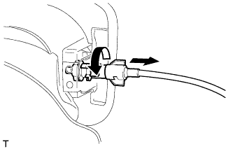
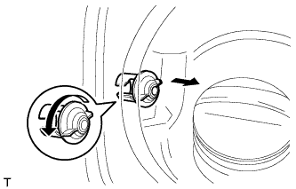
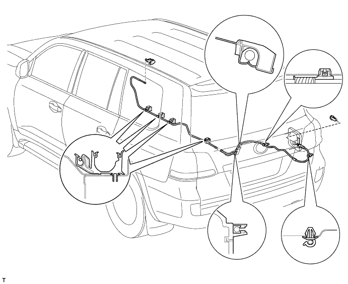

FUEL LID LOCK CONTROL CABLE ASSEMBLY (for RHD) > REMOVAL |
| 1. DISCONNECT CABLE FROM NEGATIVE BATTERY TERMINAL |
| 2. REMOVE TONNEAU COVER ASSEMBLY (w/ Tonneau Cover) |
Remove the tonneau cover.
| 3. REMOVE INSTRUMENT SIDE PANEL RH (w/o Airbag Cut Off Switch) |
 |
Place protective tape as shown in the illustration.
Using a moulding remover, detach the 6 claws and remove the side panel.
| 4. REMOVE INSTRUMENT SIDE PANEL RH (w/ Airbag Cut Off Switch) |
 |
Place protective tape as shown in the illustration.
Using a moulding remover, detach the 6 claws.
Remove the side panel and disconnect the connector.
| 5. REMOVE COWL SIDE TRIM BOARD RH |
 |
Remove the cap nut.
Detach the 2 clips and remove the trim board.
| 6. REMOVE FRONT DOOR SCUFF PLATE RH |
| 7. REMOVE REAR STEP COVER |
 |
Detach the 2 claws and remove the step cover.
| 8. REMOVE REAR DOOR SCUFF PLATE RH |
| 9. REMOVE REAR FLOOR MAT REAR SUPPORT PLATE |
 |
Detach the 6 clips and remove the support plate.
| 10. REMOVE NO. 1 TONNEAU COVER HOLDER CAP (w/ Tonneau Cover) |
 |
Detach the 2 claws and remove the tonneau cover holder cap.
| 11. REMOVE REAR NO. 1 SEAT COVER BEZEL (w/ Rear No. 2 Seat) |
| 12. REMOVE FRONT QUARTER TRIM PANEL ASSEMBLY RH |
| 13. REMOVE FUEL FILLER OPENING LID LOCK RETAINER |
 |
Turn the cable counterclockwise and remove the cable from the retainer.
 |
Turn the lock retainer counterclockwise and remove the lock retainer.
| 14. REMOVE FUEL LID LOCK OPEN LEVER SUB-ASSEMBLY |
 |
Detach the 2 claws.
Disconnect the fuel lid lock control cable and remove the fuel lid lock open lever.
| 15. REMOVE FUEL LID LOCK CONTROL CABLE SUB-ASSEMBLY |
Using a screwdriver, disconnect the clamps shown in the illustration.

Remove the lock control cable.